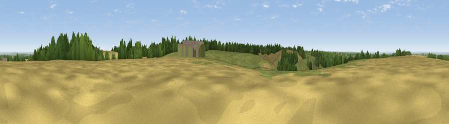

Viewpoint near Woldingham
#16397 in England · top 9% of its area beats it · near WoldinghamThe view, rendered

A 360° render of this exact spot computed from the terrain model, tree cover and land cover — summer colours, afternoon light, calibrated against photographs of famous viewpoints. Real trees, hedges and buildings will differ in detail.
The panorama
Grey silhouette: terrain skyline in each direction (720 bearings, Earth curvature and refraction included). Dashed green: skyline with trees (+15 m) and buildings (+8 m) as obstacles. Blue strip: how far the ground is visible on each bearing.
Where the view opens
Wedge length = distance to the farthest visible ground on that bearing (vegetation-aware). Rings at 10, 25 and 50 km.
What fills the view
37% grassland · 30% woodland · 27% cropland · 6% built-up
Angular shares of the visible panorama (visual magnitude), not map area. Landscape diversity 0.55 (0–1 Shannon).
Key numbers
More beautiful places nearby
The staircase of upgrades: each row has a higher view potential than everything closer. Driving times are estimates from straight-line distance, calibrated against real road routing — check an actual route before setting out.
| Place | Direction | Drive | Score |
|---|---|---|---|
| Viewpoint near Limpsfield | S · 1 km | ~3 min | 62.7 |
| Viewpoint near Limpsfield | SSW · 1 km | ~4 min | 66.0 |
| Gravelly Hill | WSW · 6 km | ~13 min | 66.7 |
| Viewpoint near Caterham Valley | WSW · 7 km | ~14 min | 68.0 |
| Viewpoint near Shipbourne | E · 18 km | ~31 min | 69.1 |
| Box Hill | W · 19 km | ~33 min | 70.4 |
| Viewpoint near Box Hill Village | WSW · 20 km | ~34 min | 71.0 |
| Viewpoint near Coldharbour | WSW · 28 km | ~44 min | 71.3 |
51.28406, -0.00215 · source: screening · position refined by local search. Computed location — check access rights before visiting.